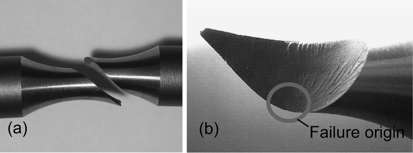

III. Cylindre soumis à la torsion#
1. État de contraintes dans une éprouvette en torsion#
Un arbre cylindrique, de génératrices parallèles à l’axe \(\mathbf{e}_3\), de hauteur \(h\), de section circulaire de rayon \(R\), est limité par la base \(\Gamma_0\) située dans le plan \(x_3 = 0\) et la base \(\Gamma_h\) située dans le plan \(x_3 = h\). On désigne par \(\Gamma_l\) la surface latérale de la pièce.
L’arbre, supposé en équilibre, est soumis en tout point \((x_1, x_2, x_3)\) au champ de contraintes suivant, exprimé dans le repère cartésien \( (O,\mathbf{e}_1,\mathbf{e}_2, \mathbf{e}_3) \), l’origine \( O \) du repère étant prise au centre de la base \(\Gamma_0\) :\[\begin{split}\mathbf{\sigma}(x_1, x_2, x_3) = \begin{pmatrix} 0 & 0 & A x_2 \\ 0 & 0 & -A x_1 \\ A x_2 & -A x_1 & 0 \end{pmatrix}\end{split}\]où \(A\) est un scalaire constant positif.
Que peut-on dire des forces volumiques extérieures appliquées à la pièce ?
Dans le domaine \( \Omega \), l’équation d’équilibre local en l’absence d’accélération s’écrit :
où \( \mathbf{f}_v \) représente la densité de force volumique extérieure.
La divergence d’un tenseur \(\boldsymbol{\sigma} \) en coordonnées cartésiennes est un vecteur dont les composantes sont :
Calculons chaque composante, pour obtenir :
Conclusion :
L’équation d’équilibre local devient :
Cela signifie que les forces volumiques extérieures appliquées à la pièce sont nulles. Autrement dit, à partir du tenseur des contraintes fourni, on déduit que la force volumique est nulle. Cette analyse montre que, sous le champ de contraintes donné, la pièce est en équilibre sans nécessiter de forces volumiques extérieures.
Calculer la densité surfacique d’efforts excercée sur la surface latérale \(\Gamma_l\)
2. Chargement sur la surface latérale#
Sur la surface \(\Gamma_l\)
Exprimons le vecteur force surfacique défini par le vecteur contrainte de Cauchy \(\mathbf{T}\) sur \(\Gamma_l\) :
\[ \mathbf{T}|_{\Gamma_l} = \boldsymbol{\sigma} \cdot \mathbf{n} |_{\Gamma_l} \]où \(\mathbf{n}\) est la normale unitaire à \(\Gamma_l\), soit \(\mathbf{n} = \mathbf{e}_r\), ce qui donne :
Et sur \(\Gamma_l\), \(x_1=R\sin \theta\) et \(x_2=R\cos \theta\), ainsi nous avons :
Conclusion: il n’y a pas d’effort exterieure appliqué sur \(\Gamma_l\), la surface latérale est libre d’effort, \(\mathbf{T}|_{\Gamma_l}=\mathbf{0}\).
Quelles sont les densités surfaciques d’efforts s’exerçant sur les bases \(\Gamma_0\) et \(\Gamma_h\) ?
3. Chargement sur les bases#
Sur la base \(\Gamma_0\)
Exprimons le vecteur force surfacique défini par le vecteur contrainte de Cauchy \(\mathbf{T}\) sur \(\Gamma_0\) :
\[ \mathbf{T}|_{\Gamma_0} = \boldsymbol{\sigma} \cdot \mathbf{n} |_{\Gamma_0} \]où \(\mathbf{n}\) est la normale unitaire à \(\Gamma_0\), soit \(\mathbf{n} = -\mathbf{e}_3\), ce qui donne :
Sur la base \(\Gamma_h\)
Exprimons le vecteur force surfacique défini par le vecteur contrainte de Cauchy \(\mathbf{T}\) sur \(\Gamma_h\) :
\[ \mathbf{T}|_{\Gamma_h} = \boldsymbol{\sigma} \cdot \mathbf{n} |_{\Gamma_h} \]où \(\mathbf{n}\) est la normale unitaire à \(\Gamma_h\), soit \(\mathbf{n} = \mathbf{e}_3\), ce qui donne :
Calculer les éléments de réduction en \(O\) (résultante et moment) du torseur des efforts surfaciques s’exerçant sur la base \(\Gamma_0\). Interpréter la nature des efforts extérieurs agissant sur cet arbre.
4. Calcul des éléments de réduction en \(O\)#
Nous devons calculer la résultante \(\mathbf{R}_O\) et le moment \(\mathbf{M}_O\) du torseur des efforts surfaciques \(\mathbf{T}\) appliqués sur la base \(\Gamma_0\).
Calcul de la résultante \(\mathbf{R}_O\)
La résultante est définie par :
En remplaçant \(\mathbf{T}\) par son expression donnée et en passant en coordonnées polaires avec \(x_1 = r \cos\theta\) et \(x_2 = r \sin\theta\), nous avons :
Or, les intégrales de \(\sin\theta\) et \(\cos\theta\) sur un tour complet valent zéro, ce qui donne :
Calcul du moment \(\mathbf{M}_O\)
Le moment en \(O\) est défini par :
où \(\mathbf{OM} = x_1 \mathbf{e}_1 + x_2 \mathbf{e}_2\), donc :
Le produit vectoriel donne :
Interprétation des efforts extérieurs
La résultante est nulle, ce qui signifie qu’aucune force globale ne s’exerce sur \(\Gamma_0\).
Le moment n’est pas nul, ce qui indique un couple pur agissant sur l’arbre.
Cela signifie que l’arbre est soumis à un couple moteur ou résistant en \(O\), sans force résultante.
Équilibre :
Et nous avons :
Or, \(\mathbf{T}|_{\Gamma_l}=\mathbf{0}\), ce qui donne :
Soit,
et,
Conclusion
\(\mathbf{R}_O = 0\) → Pas de force résultante appliquée.
\(\mathbf{M}_O = \frac{\pi A R^4}{2} \mathbf{e}_3\) → Présence d’un couple pur appliqué en \(O\).
Interprétation : L’arbre est soumis à un effort extérieur sous forme de couple, typique d’un moteur ou d’une résistance mécanique.
Déterminer les contraintes principales en tout point de la pièce.
Sachant que les matériaux fragiles rompent généralement lorsque la contrainte normale atteint une valeur critique \( \sigma_c \), en quel(s) point(s) de l’arbre constitué d’un matériau métallique, cette valeur critique est-elle atteinte ?
Quelle est la valeur maximale du couple de torsion à ne pas dépasser ?
5. Calcul des contraintes principales#
Le tenseur des contraintes en tout point de l’arbre est :
\( \boldsymbol{\sigma} = \begin{pmatrix} 0 & 0 & A x_2 \\ 0 & 0 & -A x_1 \\ A x_2 & -A x_1 & 0 \end{pmatrix} \)
Les contraintes principales sont les valeurs propres de ce tenseur. Pour déterminer les contraintes principales, nous devons résoudre l’équation caractéristique :
Show code cell content
# Obtenir les valeurs propres et les vecteurs propres
eigen_data = sigma_polar.eigenvects()
for i, (eigenvalue, multiplicity, eigenvectors) in enumerate(eigen_data, start=1):
# Afficher la valeur propre avec son indice
sigma_i = r"\sigma_{" + str(i) + r"} = " + latex(eigenvalue)
display(Math(sigma_i))
print(sigma_i)
# Afficher les vecteurs propres associés
for vec in eigenvectors:
vec_i = r"\nu_{" + str(i) + r"} = " + latex(vec)
display(Math(vec_i))
print(vec_i)
print()
Localisation de la contrainte critique \( \sigma_c \)
La contrainte principale maximale en valeur absolue est \( \sigma_3 = A R \). Cette contrainte atteint sa valeur maximale à la surface de l’arbre, où \( r = R \) (le rayon de l’arbre). Ainsi, la contrainte maximale est :
La rupture se produira lorsque \( \sigma_{\text{max}} = \sigma_c \), soit :
Valeur maximale du couple de torsion
Le moment de torsion \( \mathbf{M}_O \) appliqué à l’arbre est lié au paramètre \( A \) par la relation :
Pour déterminer la valeur maximale du couple de torsion \( \mathbf{M}_{O, \text{max}} \) que l’arbre peut supporter sans dépasser la contrainte critique \( \sigma_c \), on utilise la relation trouvée précédemment :
En substituant cette expression de \( A \) dans la formule du moment de torsion, on obtient :
qui est le couple de torsion maximal à ne pas dépasser que l’on notera \(T_{max}\).
Déterminer la direction principale associée à la contrainte principale maximale.
Sachant qu’en rupture fragile, la surface de rupture est souvent perpendiculaire à la direction principale associée à la contrainte principale maximale, expliquer le faciès de rupture présenté à la figure ci-dessous.

Figure 6.1 : Rupture helicoïddale d’une éprouvette en fonte sollicitée en torsion. (Shigeo Shimizu)
6. Directions principales des contraintes - Vecteurs propres de \(\boldsymbol{\sigma} \)#
Pour déterminer les directions principales associées aux contraintes principales, nous devons calculer les vecteurs propres du tenseur des contraintes \(\boldsymbol{\sigma} \).
Calcul des vecteurs propres
Nous avons \(\boldsymbol{\sigma}\nu = \sigma\boldsymbol{\nu}\), ainsi pour chaque valeur propre \( \sigma_i \), nous résolvons l’équation :
où \( \mathbf{I} \) est la matrice identité et \( \boldsymbol{\nu} \) est le vecteur propre associé.
Pour \( \sigma_3 = A r \) :
avec \(\boldsymbol{\nu}_3\) :
où \( \theta \) est l’angle polaire tel que \( x_1 = r \cos \theta \) et \( x_2 = r \sin \theta \).
Après calcul nous obtenons :
soit normalisé :
Show code cell content
# Définir le système de coordonnées cartésien
N = CoordSys3D('N', vector_names=('e_1', 'e_2', 'e_3'))
# Créer le système de coordonnées polaires avec des noms de vecteurs personnalisés
P = N.orient_new_axis('', theta, N.e_3, vector_names=('e_r', 'e_{\\theta}', 'e_z'))
v = matrix_to_vector(v_normalized_simplified, N)
# Exprimer v dans le système de coordonnées polaires
v_polar = express(v, P, variables=True)
# Simplifier l'expression
v_polar_simplified = simplify(v_polar)
# Générer la sortie LaTeX automatiquement
latex_output = r"\overline{\boldsymbol{\nu}}_{3} = "
latex_output += latex(v_polar_simplified)
# Afficher la sortie LaTeX
display(Math(latex_output))
print(latex_output)
Dans le cas d’une rupture fragile, la fissure se propage perpendiculairement à la direction de la contrainte principale maximale. Ici, la contrainte principale maximale \(\sigma_3=AR\) est associée au vecteur propre \(\nu_{3}\), indiquant que la direction principale combine les axes \(x_1\), \(x_2\) et \(x_3\).
La composante \(\nu_{3}\) selon \(x_3\) étant non nulle, la direction principale possède une composante axiale. Ainsi, la surface de rupture s’oriente perpendiculairement à cette direction, ce qui conduit à un faciès de rupture hélicoïdal observé dans les matériaux fragiles soumis à une torsion.
Cette orientation de la fissure s’explique par la distribution non uniforme des contraintes principales, maximales en \(r=R\). La fissure s’initie donc à la surface du cylindre, où la contrainte est la plus élevée. La combinaison d’une fissure se développant dans un plan perpendiculaire au vecteur propre orienté à 45° et de contraintes principales maximales à la surface aboutit à un faciès hélicoïdal.
Cette analyse est cohérente avec les observations expérimentales : sous l’effet d’un couple de torsion, les matériaux fragiles présentent des ruptures suivant des plans inclinés, résultant en une surface de rupture hélicoïdale.
On considère un matériau fragile avec les caractéristiques suivantes :
Contrainte critique en cisaillement : \( \sigma_c = 100 \) MPa
Module de cisaillement : \( G = 50\,000 \) MPa
Rayon de l’arbre : \( R = 30 \) mm
Longueur de l’arbre : \( L = 1000 \) mm
Calculer le couple de torsion critique \( T_{\text{c}} \) à ne pas dépasser avant la rupture.
En déduire l’angle de torsion critique \( \theta_{\text{c}} \) (en degrés).
Formules utiles :
\[ \theta_{\text{max}} = \frac{T_{\text{max}} L}{G J} \]avec
\[ J = \frac{\pi R^4}{2} \]
7. Passage à la simulation#
Nous allons maintenant coder un script interactif en Python pour visualiser comment l’angle de torsion varie avec le couple appliqué. Nous afficherons aussi sa valeur maximale \(T_{\text{c}}\) calculée au point 5 :
Application numérique:
from bokeh.models import Div
from bokeh.layouts import column
from bokeh.io import output_notebook, show
from bokeh.plotting import figure
from bokeh.models import Legend
from bokeh.models import Slider, CustomJS, ColumnDataSource
import numpy as np
# Création du fichier HTML pour affichage sur le site
output_notebook(hide_banner=True)
# Paramètres du matériau et de l'arbre (fonte grise, matériau métallique fragile)
sigma_c = 100 * 1e6 # MPa → N/m²
G_init = 50_000 * 1e6 # MPa → N/m²
R_init = 200 / 1000 # mm → m
L_init = 1000 / 1000 # mm → m
# Données pour la courbe
theta_values_deg = np.linspace(0, 1, 10) # Angle en degrés
theta_values_rad = np.radians(theta_values_deg) # Conversion en radians
J_init = (np.pi * R_init**4) / 2 # Moment quadratique pour un cylindre
T_values = (theta_values_rad * G_init * J_init) / L_init # Calcul du couple T(θ)
Tc_init = (sigma_c * J_init) / R_init # T_max pour θ = 1 radian
source_curve = ColumnDataSource(data=dict(x=theta_values_deg, y=T_values)) # Courbe
source_point = ColumnDataSource(data=dict(x=[0], y=[0])) # Point mobile (bille)
source_Tc = ColumnDataSource(data=dict(x=[0, 1], y=[Tc_init, Tc_init])) # Asymptote T_max
# Création du graphique
p = figure(title="Évolution du couple T en fonction de θ",
x_axis_label="Angle de torsion θ (°)",
y_axis_label="Couple de torsion T (N·m)",
background_fill_color="#121212",
border_fill_color="#121212",
width=775, height=500)
# ✅ Mettre le texte en blanc (titre, axes, étiquettes)
p.title.text_color = "white"
p.xaxis.axis_label_text_color = "white"
p.yaxis.axis_label_text_color = "white"
p.xaxis.major_label_text_color = "white"
p.yaxis.major_label_text_color = "white"
# Tracé de la courbe T(θ)
p.line("x", "y", source=source_curve, line_width=2, color="cyan", legend_label=r"T(θ)")
# Ajout de l'asymptote T_c
p.line("x", "y", source=source_Tc, line_width=2, line_dash="dashed", color="magenta", legend_label=r"T_c")
# Ajout de la bille mobile
p.scatter("x", "y", source=source_point, size=10, color="yellow", legend_label=r"T_max")
# ✅ Déplacer la légende en haut à gauche
p.legend.location = "top_left"
p.legend.label_text_color = "white"
p.legend.background_fill_color = "#1e1e1e"
p.legend.border_line_color = "white"
# Curseur interactif pour θ
slider_theta = Slider(start=0, end=1, value=0, step=0.001, title="θ (°)")
slider_R = Slider(start=0.05, end=0.4, value=R_init, step=0.01, title="Rayon R (m)")
slider_L = Slider(start=0.5, end=2.0, value=L_init, step=0.1, title="Longueur L (m)")
# Curseurs interactifs pour G
slider_G = Slider(start=10, end=100, value=G_init / 1e9, step=10, title="Module de cisaillement G (GPa)")
# Ajout d'un widget texte pour afficher la valeur de T(θ)
T_value_text = Div(
text=f"<b>T(θ) = {0:.4f} N·m</b>",
styles={"color": "white", "font-size": "16px", "background-color": "#121212", "padding": "5px"}
)
# Callback JavaScript pour mettre à jour le graphique et la valeur de T(θ)
callback = CustomJS(args=dict(source_curve=source_curve, source_point=source_point, source_Tc=source_Tc,
slider_theta=slider_theta, slider_R=slider_R, slider_L=slider_L,
slider_G=slider_G, sigma_c=sigma_c, theta_values_rad=theta_values_rad, T_text=T_value_text), code="""
var theta_deg = slider_theta.value;
var theta_rad = theta_deg * Math.PI / 180;
var R = slider_R.value;
var L = slider_L.value;
var G = slider_G.value * 1e9;
// Calcul du moment quadratique J
var J = (Math.PI * Math.pow(R, 4)) / 2;
// Mise à jour des valeurs de T(θ)
var new_T_values = theta_values_rad.map(theta => (theta * G * J) / L);
var new_T_point = (theta_rad * G * J) / L;
// Calcul de la nouvelle valeur de T_max pour θ = 1 radian
var new_Tc = (sigma_c * J) / R
// Mise à jour des sources de données
source_curve.data['y'] = new_T_values;
source_curve.change.emit();
source_point.data['x'] = [theta_deg];
source_point.data['y'] = [new_T_point];
source_point.change.emit();
source_Tc.data['y'] = [new_Tc, new_Tc]; // Mise à jour de l'asymptote
source_Tc.change.emit();
// Mise à jour du texte
T_text.text = "<b>T(θ) = " + new_T_point.toFixed(4) + " N·m</b>";
""")
# Liaison des curseurs au callback
slider_theta.js_on_change("value", callback)
slider_R.js_on_change("value", callback)
slider_L.js_on_change("value", callback)
slider_G.js_on_change("value", callback)
# Disposition des éléments
layout = column(p, slider_theta, slider_R, slider_L, slider_G, T_value_text)
show(layout)